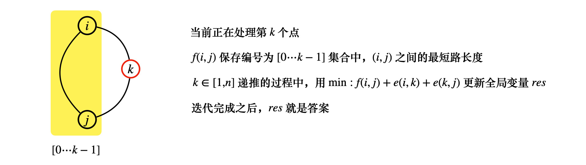

floyd 任意两点最短路径 floyd 算法能够求出任意两点( i , j ) (i, j) ( i , j ) k k k 选还是不选这个点 考虑编号为k k k 作为 dp 的阶段，从k − 1 k-1 k − 1 k k k k k k
f ( k , i , j ) = min ( f ( k − 1 , i , j ) , f ( k − 1 , i , k ) + f ( k − 1 , k , j ) ) f(k, i, j) = \min (f(k-1, i, j), f(k-1, i, k) + f(k-1, k, j)) f ( k , i , j ) = min ( f ( k − 1 , i , j ) , f ( k − 1 , i , k ) + f ( k − 1 , k , j ) )
如果用邻接矩阵存图，A ( i , j ) A(i, j) A ( i , j ) ( i , j ) (i, j) ( i , j ) f ( 0 , i , j ) = A ( i , j ) f(0, i, j) = A(i, j) f ( 0 , i , j ) = A ( i , j )
传递闭包 不妨用f ( i , j ) = 1 f(i, j) = 1 f ( i , j ) = 1 i i i j j j 有关系 ，f ( i , j ) = 0 f(i, j) = 0 f ( i , j ) = 0 f ( i , i ) = 1 f(i, i) = 1 f ( i , i ) = 1
1 2 3 4 5 6 7 8 9 10 11 const int maxn = 1e3 + 10; bool f[maxn][maxn]; int n; int main // ... for (int k = 1; k <= n; k++) for (int i = 1; i <= n; i++) for (int j = 1; j <= n; j++) f[i][j] |= (f[i][k] & f[k][j]); // ... }
Sorting It All Out
很显然这是一个有向图传递闭包的问题，对于i < j i < j i < j f ( i , j ) = 1 f(i, j) = 1 f ( i , j ) = 1 i > j i > j i > j j < i j < i j < i f ( j , i ) = 1 f(j, i) = 1 f ( j , i ) = 1
执行 floyd 传递闭包，如果存在f ( i , j ) = 1 f(i, j) = 1 f ( i , j ) = 1 f ( j , i ) = 1 f(j, i) = 1 f ( j , i ) = 1 f ( i , j ) = 0 f(i, j) = 0 f ( i , j ) = 0 f ( j , i ) = 0 f(j, i) = 0 f ( j , i ) = 0 ( i , j ) (i, j) ( i , j ) f ( i , j ) , f ( j , i ) f(i, j), \ f(j, i) f ( i , j ) , f ( j , i ) 1 1 1
需要输出不等式之间的大小关系，由于是一个 DAG，可以考虑使用拓扑排序输出
1 2 3 4 5 6 7 8 9 10 11 12 13 14 15 16 17 18 19 20 21 22 23 24 25 26 27 28 29 30 31 32 33 34 35 36 37 38 39 40 41 42 43 44 45 46 47 48 49 50 51 52 53 54 55 56 57 58 59 60 61 62 63 64 65 66 67 68 69 70 71 72 73 74 75 76 77 78 79 80 81 82 83 84 85 86 87 88 const int maxn = 26 + 10; int G[maxn][maxn], f[maxn][maxn], deg[maxn]; int n, m; void floyd for (int k = 0; k < n; k++) { for (int i = 0; i < n; i++) { for (int j = 0; j < n; j++) f[i][j] |= (f[i][k] & f[k][j]); } } } int conflict for (int i = 0; i < n; i++) { if (f[i][i]) return 1; for (int j = 0; j < n; j++) { if (j == i) continue ; if (f[i][j] && f[j][i]) return 1; } } return 0; } int sure for (int i = 0; i < n; i++) { for (int j = 0; j < n; j++) { if (j == i) continue ; if (f[i][j] == 0 && f[j][i] == 0) return 0; } } return 1; } void topo queue<int> que; string res = "" ; for (int i = 0; i < n; i++) if (deg[i] == 0) que.push(i); while (que.size()) { auto u = que.front(); que.pop(); res += ('A' + u); for (int v = 0; v < n; v++) if (G[u][v] && --deg[v] == 0) que.push(v); } printf ("%s" , res.c_str()); printf (".\n" ); } void init memset(G, 0, sizeof G); memset(f, 0, sizeof f); memset(deg, 0, sizeof deg); } int main freopen("input.txt" , "r" , stdin); while (scanf("%d%d" , &n, &m) == 2 && n) { init(); int st = 0, t = 0; // -1 conflict, 1 ok, 0 not sure for (int i = 0; i < m; i++) { char str[10]; scanf("%s" , str); if (st != 0) continue ; int u = str[0] - 'A' , v = str[strlen(str)-1] - 'A' ; f[u][v] |= 1, G[u][v] = 1, deg[v]++; floyd(); if (conflict()) st = -1; else if (sure()) st = 1; t = i; } // get ans if (st == -1) printf ("Inconsistency found after %d relations.\n" , t+1); else if (st == 1) { printf ("Sorted sequence determined after %d relations: " , t+1); topo(); } else puts("Sorted sequence cannot be determined." ); } }
无向图最小环 
Sightseeing Trip
同样套用 floyd 算法k k k f ( i , j ) f(i, j) f ( i , j ) { 0 ⋯ k − 1 } \{0\cdots k-1\} { 0 ⋯ k − 1 } ( i , j ) (i, j) ( i , j ) min ( f ( i , j ) + e ( i , k ) + e ( k , j ) , r e s ) \min(f(i,j) + e(i, k) + e(k, j), res) min ( f ( i , j ) + e ( i , k ) + e ( k , j ) , r e s ) r e s res r e s
然后再将k k k floyd \textbf{floyd} floyd f ( i , j ) f(i, j) f ( i , j ) f ( i , j ) f(i, j) f ( i , j ) { 0 ⋯ k } \{0\cdots k\} { 0 ⋯ k }
继续往下迭代，即可得到最优解
特别注意的是 ，如图中所示，i , j i, j i , j < k < k < k
1 2 3 4 5 6 7 8 9 10 11 12 13 14 15 16 17 18 19 20 21 22 23 24 25 26 27 28 29 30 31 32 33 34 35 36 37 38 39 40 41 42 43 44 45 46 47 48 49 50 51 52 53 54 55 56 57 58 59 60 61 62 63 64 65 66 67 const int maxn = 200 + 10, inf = 0x3f3f3f3f; int n, m; int e[maxn][maxn], f[maxn][maxn], res = inf; int pos[maxn][maxn]; vector<int> path; void get_path(int x, int y) { if (pos[x][y] == 0) return ; int k = pos[x][y]; get_path(x, k); path.push_back(k); get_path(k, y); } void floyd memcpy(f, e, sizeof e); memset(pos, 0, sizeof pos); res = inf; for (int k = 1; k <= n; k++) { for (int i = 1; i < k; i++) for (int j = i+1; j < k; j++) { if ((ll)f[i][j] + e[j][k] + e[k][i] < res) { res = f[i][j] + e[j][k] + e[k][i]; path.clear(); path.push_back(i); get_path(i, j); path.push_back(j); path.push_back(k); } } for (int i = 1; i <= n; i++) for (int j = 1; j <= n; j++) { if (f[i][k] + f[k][j] < f[i][j]) { f[i][j] = f[i][k] + f[k][j]; pos[i][j] = k; } } } } void init memset(e, inf, sizeof e); for (int i = 0; i <= n; i++) e[i][i] = 0; } int main freopen("input.txt" , "r" , stdin); scanf("%d%d" , &n, &m); init(); for (int i = 0; i < m; i++) { int u, v, w; scanf("%d%d%d" , &u, &v, &w); e[u][v] = e[v][u] = min(e[u][v], w); } // then solve floyd(); if (res == inf) puts("No solution." ); else { for (auto x : path) printf ("%d " , x); printf ("\n" ); } }
floyd 与广义矩阵运算 给定一张无向图，求从起点到终点恰好经过n n n
在 floyd 算法执行过程中，最开始阶段A 1 ( i , j ) = e ( i , j ) A_1(i, j) = e(i, j) A 1 ( i , j ) = e ( i , j ) i → j i \to j i → j ( i , j ) (i, j) ( i , j ) A 2 ( i , j ) = min 1 ⩽ k ⩽ n { A 1 ( i , k ) + A 1 ( k , j ) } A_2(i, j) = \displaystyle\min_{1 \leqslant k \leqslant n} \{A_1(i, k) + A_1(k, j)\} A 2 ( i , j ) = 1 ⩽ k ⩽ n min { A 1 ( i , k ) + A 1 ( k , j ) } i → k → j i \to k \to j i → k → j A 2 ( i , j ) A_2(i, j) A 2 ( i , j ) i → j i \to j i → j 2 2 2
以此类推，用A m ( i , j ) A_m(i, j) A m ( i , j ) m m m
A m + r ( i , j ) = min 1 ⩽ k ⩽ n { A m ( i , k ) + A r ( k , j ) } A_{m+r}(i, j) = \min_{1 \leqslant k \leqslant n} \{A_{m}(i, k) + A_{r}(k, j)\} A m + r ( i , j ) = 1 ⩽ k ⩽ n min { A m ( i , k ) + A r ( k , j ) }
最后答案是求A n ( s , t ) A_n(s, t) A n ( s , t )
C ( i , j ) = min 1 ⩽ k ⩽ n { A ( i , k ) + B ( k , j ) } C(i, j) = \min_{1 \leqslant k \leqslant n} \{A(i, k) + B(k, j)\} C ( i , j ) = 1 ⩽ k ⩽ n min { A ( i , k ) + B ( k , j ) }
1 2 3 4 5 6 7 8 9 10 11 12 13 14 15 16 17 18 19 20 21 22 23 24 25 26 27 28 29 30 31 32 33 34 35 36 37 38 39 40 41 42 43 44 45 46 47 48 49 50 51 52 53 54 55 56 57 58 59 const int maxn = 100 + 10, inf = 0x3f3f3f3f; map<int, int> M; int n, N, m, s, t, G[maxn][maxn], idx = 0; typedef vector<vector<int> > Matrix; Matrix get_matrix Matrix res(maxn, vector<int>(maxn, inf)); for (int i = 1; i <= n; i++) for (int j = 1; j <= n; j++) { res[i][j] = G[i][j]; } return res; } Matrix matrix_mul(const Matrix &A, const Matrix &B) { Matrix res(maxn, vector<int>(maxn, inf)); for (int i = 1; i <= n; i++) for (int j = 1; j <= n; j++) { for (int k = 1; k <= n; k++) res[i][j] = min(res[i][j], A[i][k] + B[k][j]); } return res; } void solve(Matrix &A) { N--; Matrix res = A; for (; N; N >>= 1) { if (N & 1) res = matrix_mul(res, A); A = matrix_mul(A, A); } cout << res[M[s]][M[t]] << endl; } void init() { M.clear(); memset(G, inf, sizeof G); idx = 0; } int main() { freopen("input.txt", "r", stdin); scanf("%d%d%d%d", &N, &m, &s, &t); init(); // get data for (int i = 0; i < m; i++) { int x, y, z; scanf("%d%d%d", &z, &x, &y); int u = M[x] ? M[x] : (M[x] = ++idx); int v = M[y] ? M[y] : (M[y] = ++idx); G[u][v] = G[v][u] = z; } n = idx; Matrix A = get_matrix(); solve(A); }
最短路和 dp Adventure Of Super Mario
类似背包问题，容易想到的是当前使用了k k k d p ( v , k ) dp(v, k) d p ( v , k ) v v v k k k
对于∀ k ∈ [ 0 , K ] \forall \ k \in [0, K] ∀ k ∈ [ 0 , K ] v v v 2 2 2 ( u , v ) (u, v) ( u , v ) u ∈ prev ( v ) u \in \text{prev}(v) u ∈ prev ( v ) v v v u ∈ [ 1 , v − 1 ] u \in [1, v-1] u ∈ [ 1 , v − 1 ]
d p ( v , k ) = min u ∈ [ 1 , v − 1 ] { d p ( u , k ) + f ( u , v ) } dp(v, k) = \displaystyle \min_{u \in [1, v-1]} \{dp(u, k) + f(u, v)\} d p ( v , k ) = u ∈ [ 1 , v − 1 ] min { d p ( u , k ) + f ( u , v ) } f ( u , v ) f(u, v) f ( u , v ) u → v u\to v u → v d p ( v , k ) = min u ∈ [ 1 , v − 1 ] { d p ( u , k − 1 ) } dp(v, k) = \displaystyle \min_{u \in [1, v-1]} \{dp(u, k-1)\} d p ( v , k ) = u ∈ [ 1 , v − 1 ] min { d p ( u , k − 1 ) } f ( u , v ) ⩽ L f(u, v) \leqslant L f ( u , v ) ⩽ L 并且 ( u , v ) (u, v) ( u , v ) ⩽ A \leqslant A ⩽ A A A A floyd \text{floyd} floyd floyd \text{floyd} floyd k k k f ( i , j ) = min ( f ( i , k ) + f ( k , j ) ) f(i, j) = \min (f(i, k) + f(k, j)) f ( i , j ) = min ( f ( i , k ) + f ( k , j ) ) f ( i , j ) f(i, j) f ( i , j ) ( i , j ) (i, j) ( i , j ) 编号不超过k k k 的最短路径f ( i , j ) ⩽ L and k ⩽ A f(i, j) \leqslant L \ \textbf{and} \ k \leqslant A f ( i , j ) ⩽ L and k ⩽ A 最后考虑 dp 的初始状态和终点d p ( u , k ) dp(u, k) d p ( u , k ) 2 2 2 ∀ k ∈ [ 0 , K ] : d p ( s , k ) = 0 \forall k \in [0, K]: \quad dp(s, k) = 0 ∀ k ∈ [ 0 , K ] : d p ( s , k ) = 0 ∀ u ∈ V : d p ( u , 0 ) = f ( s , u ) \forall u \in V: \quad dp(u, 0) = f(s, u) ∀ u ∈ V : d p ( u , 0 ) = f ( s , u )
最后的答案为min k ∈ [ 0 , K ] d p ( t , k ) \displaystyle\min_{k \in [0, K]} dp(t, k) k ∈ [ 0 , K ] min d p ( t , k )
1 2 3 4 5 6 7 8 9 10 11 12 13 14 15 16 17 18 19 20 21 22 23 24 25 26 27 28 29 30 31 32 33 34 35 36 37 38 39 40 41 42 43 44 45 46 47 48 49 50 51 52 53 54 55 56 57 58 59 60 61 62 63 64 65 66 67 const int maxn = 100 + 10, inf = 0x3f3f3f3f; int A, B, M, L, K, n, s, t; int f[maxn][maxn]; void init memset(f, inf, sizeof f); n = A+B; for (int i = 1; i <= n; i++) f[i][i] = 0; s = 1, t = A+B; } int can[maxn][maxn]; void floyd memset(can, 0, sizeof can); for (int k = 1; k <= n; k++) { for (int i = 1; i <= n; i++) for (int j = 1; j <= n; j++) { if (f[i][j] > f[i][k] + f[k][j]) { f[i][j] = f[i][k] + f[k][j]; } if (k <= A && f[i][j] <= L) can[i][j] = 1; } } } int dp[maxn][maxn]; void solve memset(dp, inf, sizeof dp); for (int i = 0; i <= K; i++) dp[s][i] = 0; for (int u = 1; u <= n; u++) dp[u][0] = f[s][u]; for (int v = 1; v <= n; v++) { for (int k = 1; k <= K; k++) { _for(u, 1, v) { if (can[u][v]) dp[v][k] = min(dp[v][k], dp[u][k-1]); dp[v][k] = min(dp[v][k], dp[u][k] + f[u][v]); } } } } int main freopen("input.txt" , "r" , stdin); int cas; cin >> cas; while (cas--) { cin >> A >> B >> M >> L >> K; init(); // get graph for (int i = 0; i < M; i++) { int x, y, z; scanf("%d%d%d" , &x, &y, &z); f[x][y] = f[y][x] = min(f[x][y], z); } // floyd and dp floyd(); solve(); int ans = inf; for (int i = 0; i <= K; i++) ans = min(ans, dp[n][i]); cout << ans << endl; } }
最短路建图：拆点 Full Tank?
要求从s → t s \to t s → t 边权 ，由于油箱容量c ∈ [ 0 , C ] c \in [0, C] c ∈ [ 0 , C ] c c c ( u , c ) (u, c) ( u , c ) u u u c c c
对于当前点v v v v v v 2 2 2 ( u , v ) (u, v) ( u , v )
( u , c + d ( u , v ) ) → 0 ( v , c ) (u, \ c+d(u, v)) \xrightarrow{0} (v, c) ( u , c + d ( u , v ) ) 0 ( v , c ) c + d ( u , v ) ⩽ C c + d(u, v) \leqslant C c + d ( u , v ) ⩽ C ( v , c − 1 ) → p v ( v , c ) (v, c-1) \xrightarrow{p_v} (v, c) ( v , c − 1 ) p v ( v , c ) ( v , c − 1 ) (v, c-1) ( v , c − 1 ) ( v , c ) (v, c) ( v , c ) p v p_v p v v v v 2 2 2 c − 1 ⩾ 0 and c ⩽ C c-1 \geqslant 0 \ \textbf{and} \ c \leqslant C c − 1 ⩾ 0 and c ⩽ C 这样可以以( s , 0 ) (s, 0) ( s , 0 ) S S S dijkstra \text{dijkstra} dijkstra ∀ u , c : d [ ( u , c ) ] \forall u, c: \quad d[(u, c)] ∀ u , c : d [ ( u , c ) ] min c ∈ [ 0 , C ] d ( t , c ) \displaystyle\min_{c \in [0, C]} d(t, c) c ∈ [ 0 , C ] min d ( t , c )
如果用哈希实现，将结构体作为k e y key k e y
1 2 3 4 5 6 7 8 9 10 11 12 13 14 15 16 17 18 19 20 21 22 23 24 25 26 27 class A { public: int u, c; A(int u = 0, int c = 0) : u(u), c(c) {} bool operator< (const A &rhs) const { return u < rhs.u || (u == rhs.u && c < rhs.c); } }; struct hashfun { std::size_t operator() (const A &a) const { return ( (hash <int>()(a.u)) ^ (hash <int>()(a.c) << 1) ); } }; struct eq { bool operator() (const A &lhs, const A &rhs) const { return lhs.u == rhs.u && lhs.c == rhs.c; } }; unordered_map<A, int, hashfun, eq> mp; int get(const A &a) { return mp[a] ? mp[a] : (mp[a] = ++n); }
如果本例先建出隐式图 ，再进行dijkstra \text{dijkstra} dijkstra build \text{build} build dijkstra \text{dijkstra} dijkstra dijkstra \text{dijkstra} dijkstra ( d [ ( u , c ) ] , ( u , c ) ) (d[(u, c)], (u, c)) ( d [ ( u , c ) ] , ( u , c ) ) ( u , c ) (u, c) ( u , c ) ∀ v : ( u , v ) ∈ E \forall \ v: \ (u, v) \in E ∀ v : ( u , v ) ∈ E ∀ v : ( u , v ) \forall v : \ (u, v) ∀ v : ( u , v )
( u , c ) → p u ( u , c + 1 ) (u, c) \xrightarrow{p_u} (u, c+1) ( u , c ) p u ( u , c + 1 ) c + 1 ⩽ C c+1 \leqslant C c + 1 ⩽ C 权值代价 为p u p_u p u ( u , c ) → 0 ( v , c − e ( u , v ) ) (u, c) \xrightarrow{0} (v, c-e(u, v)) ( u , c ) 0 ( v , c − e ( u , v ) ) c − e ( u , v ) ⩾ 0 c-e(u, v) \geqslant 0 c − e ( u , v ) ⩾ 0 0 0 0 起点为S = ( s , 0 ) S = (s, 0) S = ( s , 0 ) ∀ c : min c ∈ [ 0 , C ] d [ ( t , c ) ] \forall c: \ \displaystyle\min_{c \in [0, C]}d[(t, c)] ∀ c : c ∈ [ 0 , C ] min d [ ( t , c ) ] dijkstra \text{dijkstra} dijkstra ( u , c ) (u, c) ( u , c ) u = t u = t u = t dijkstra \text{dijkstra} dijkstra d d d d [ ( u , c ) ] d[(u, c)] d [ ( u , c ) ]
1 2 3 4 5 6 7 8 9 10 11 12 13 14 15 16 17 18 19 20 21 22 23 24 25 26 27 28 29 30 31 32 33 34 35 36 37 38 39 40 41 42 43 44 45 46 47 48 49 50 51 52 53 54 55 56 57 58 59 60 61 62 63 64 65 66 67 68 69 70 71 72 73 74 75 76 77 78 79 80 81 82 83 84 85 86 87 88 89 90 91 92 93 94 95 96 97 98 99 100 101 102 103 104 105 106 107 108 109 110 111 112 113 114 115 116 117 118 119 120 121 122 123 124 125 126 const int maxn = 2e3 + 10, inf = 0x3f3f3f3f; const int maxm = 2e4 + 10; int n, m, C, s, t, p[maxn], res = inf; namespace Graph { int idx = 1; int head[maxn], ver[maxm], e[maxm], ne[maxm]; void add(int x, int y, int z) { ver[++idx] = y, e[idx] = z, ne[idx] = head[x], head[x] = idx; } void init idx = 1; memset(head, 0, sizeof head); } }; class A { public: int u, c; A(int u, int c) : u(u), c(c) {} bool operator< (const A &rhs) const { return u < rhs.u || (u == rhs.u && c < rhs.c); } }; struct hashfun { int operator() (const A &a) const { return a.u * 1003 + a.c; } }; struct eqfun { bool operator() (const A &lhs, const A &rhs) const { return lhs.u == rhs.u && lhs.c == rhs.c; } }; unordered_map<A, int, hashfun, eqfun> mp; int tot = 0; inline int get(const A &a) { return mp[a] ? mp[a] : (mp[a] = ++tot); } const int N = 1e5 + 10; int d[N], vis[N]; typedef pair<int, A> PII; // (d[ states ], (u, c)) void dijkstra using namespace Graph; memset(d, inf, sizeof d); memset(vis, 0, sizeof vis); res = inf; priority_queue<PII, vector<PII>, greater<PII> > q; int ss = get(A(s, 0)); d[ss] = 0; q.push(PII(d[ss], A(s, 0))); while (q.size()) { int D = q.top().first; auto x = q.top().second; q.pop(); if (x.u == t) { res = min(res, D); return ; } int sx = get(x); if (vis[sx]) continue ; vis[sx] = true ; if (x.c + 1 <= C) { A y(x.u, x.c+1); int sy = get(y); if (d[sy] > D + p[x.u]) { d[sy] = D + p[x.u]; q.push(PII(d[sy], y)); } } for (int i = head[x.u]; i; i = ne[i]) { int v = ver[i]; if (x.c >= e[i]) { A y(v, x.c-e[i]); int sy = get(y); if (d[sy] > D + 0) { d[sy] = D; q.push(PII(d[sy], y)); } } } } return ; } int main freopen("input.txt" , "r" , stdin); cin >> n >> m; using namespace Graph; init(); for (int i = 0; i < n; i++) scanf("%d" , &p[i]); while (m--) { int x, y, z; scanf("%d%d%d" , &x, &y, &z); add(x, y, z), add(y, x, z); } // query and dijkstra int q; cin >> q; while (q--) { scanf("%d%d%d" , &C, &s, &t); dijkstra(); if (res == inf) puts("impossible" ); else printf ("%d\n" , res); } }
 微信
微信 支付宝
支付宝